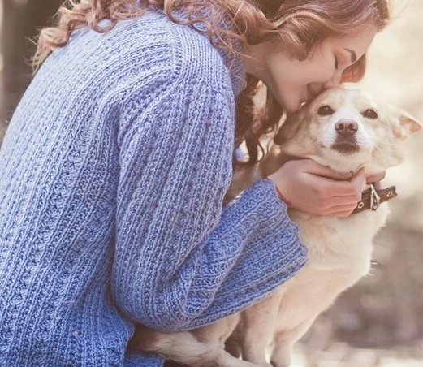
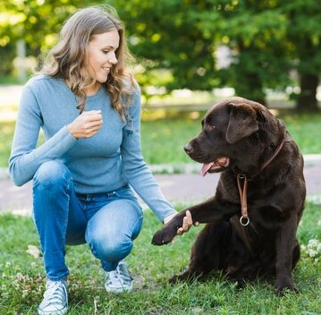

Login
Signup
Ready to Adopt
Pet adoption is effective way to connect potential pet owners with animals in need of a loving home.It provide a platform for animal shelters, rescues, and individuals to showcase adoptable pets and facilitate the adoption process
Apply today

The Best for your pet
Pet adoption is effective way to connect potential pet owners with animals in need of a loving home.It provide a platform for animal shelters, rescues, and individuals to showcase adoptable pets and facilitate the adoption process
Find friend
Adoption Process
Find your pet
Choose the right dog

Know your pet
Know all necessary information

Adopt your pet
Take your pet home
Loving helping pets
Become Voltunteer
Volunteers should have a genuine love for dogs and a commitment to the mission of the adoption website.Choosing a volunteer role that aligns with one's skills and interests contributes to a more fulfilling and effective contribution.
Make a donation
Volunteers should have a genuine love for dogs and a commitment to the mission of the adoption website.Choosing a volunteer role that aligns with one's skills and interests contributes to a more fulfilling and effective contribution.
Community&Support
Volunteers should have a genuine love for dogs and a commitment to the mission of the adoption website.Choosing a volunteer role that aligns with one's skills and interests contributes to a more fulfilling and effective contribution.
Find & Adopt